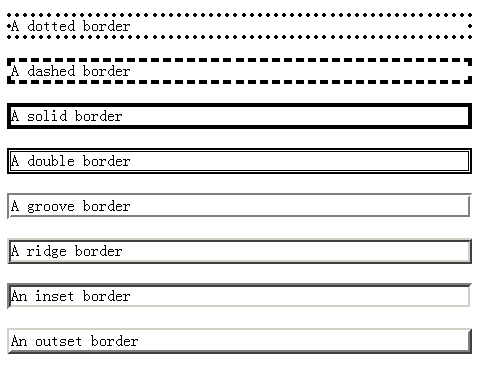

石婉茹
我的名字：石婉茹
QQ:2829339528
wechat:ww28052
敢问路在何方&&路在脚下
95后/本科在读/轻生活/轻梦想
石婉茹
我的名字：石婉茹
QQ:2829339528
wechat:ww28052
敢问路在何方&&路在脚下
95后/本科在读/轻生活/轻梦想
一个盒子中主要的属性就5个：width内容的宽度、height内容的高度、padding内边距、border边框、margin外边距。
padding就是内边距。padding的区域有背景颜色，css2.1前提下，并且背景颜色一定和内容区域的相同。即background-color将填充所有boder以内的区域。ps:背景的填充与background-clip与background-origin有关
padding综合属性 按方向拆分padding-top padding-right padding-bottom padding-left
4个值（上右下左） 3个值（上 右 下 左和右相同） 2个值（上 右 下同上 左同右） 1个值（上右下左相同）
边框有三个要素：粗细、线型、颜色。颜色如果不写，默认是黑色。另外两个属性不写,显示不出来边框。
border:10px ridge red; 在chrome和firefox、IE中有细微差别，如果追求极大的还原度，则利用图片。solid dotted dashed则比较稳定。
border综合属性 按方向拆分border-top border-right border-bottom border-left 按三要素拆分border-width边框宽度 border-style边框线形 border-color边框颜色
按方向、按要素拆分，12条语句
规定元素的width和height属性是包含元素的border+padding+content
IE6以后支持W3C标准盒模型，现在的主流浏览器里面都默认使用W3C标准盒模型
规定元素的width和height属性只包含content
真实占有宽度= 左border + 左padding + width + 右padding + 右border
box-sizing属性是CSS3中新出的属性，用来选择盒模型标准，默认值为content-box（W3C），另一个值为border-box（IE）